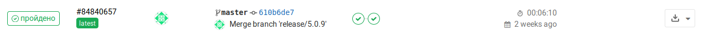

GravitLauncher - профессиональный лаунчер Minecraft с лучшей защитой
Начало работы
Ставьте только те модули, что вам действительно необходимы. Большинство модулей требует дополнительной конфигурацииМодули, заканчивающиеся на _module - для лаунчсервера, на _lmodule - для лаунчера(требутется LauncherModuleLoader), на _swmodule для ServerWrapper'а
Устанавливаем лаунчсервер
Вариант 1: Скрипт установки
Самый простой вариантРекомендуетсяДля установки лаунчера версии 5.1.3+ можно воспользоваться скриптом. Доступные на данный момент скрипты находятся тут.
- dev - самая последняя версия, менее или более стабильная чем master. Доступны новейшие возможности, возможны проблемы
- master - последний доступный релиз. Wiki всегда основана именно на этой ветке
Для установки лаунчсервера на Linux перейдите в папку, в которой у вас будет находиться лаунчсервер и выполните следующие команды:
- curl -o setup.sh https://mirror.gravit.pro/scripts/setup-ВЕРСИЯ.sh.
- (ОПЦИОНАЛЬНО) Выполните cat setup.sh и убедитесь, что скрипт скачан без ошибок.
- Выполните chmod +x setup.sh что бы выдать права на выполнение
- И наконец запустите скрипт ./setup.sh
- Если всё прошло успешно последним сообщением будет: NOT DELETE DIRECTORIES src AND srcRuntime
- Если что то пошло не так на фазе проверки(фаза 0) - исправьте проблему и запустите скрипт снова.
Если что то пошло не так на другой фазе - вам нужно будет исправить проблему, удалить созданные скриптом файлы и папки и заного запустить скрипт
При установке на Windows можно воспользоваться Cygwin или другим методом установки
Требования для успешной установки лаунчсервера скриптом
Важно- При выборе ОС выбирайте самые последние версии дистрибутивов: Debian 10, Ubuntu 18.04, ArchLinux и другие
- У вас должно быть достаточно оперативной памяти для сборки(хотя бы 600-700Мб свободно), сам лаунчсервер при этом может работать с 300Мб или даже 128Мб. Если у вас машина с малым объемом ОЗУ и скрипт сборки падает из за нехватки памяти можете попробывать включить swap или воспользоваться другими вариантами установки
- У вас должен быть установлен OpenJDK 11(и запускаться по умолчанию, т.е. вывод java -version должен выдать OpenJDK 11)
- Для работы ProGuard уже после установки лаунчсервера вам понадобится OpenJFX той же версии, что и ваша OpenJDK(11). Иначе собранный лаунчер не запустится с ошибкой AbstractMethodError на JavaFXApplication при включеном ProGuard
- У вас должен быть установлен Git и Curl
- При возникновении проблем с launch4j:
- Убедитесь что у вас нет файла favicon.ico в корне лаунчсервера или он является достоверно валидным
- Убедитесь что вы не меняли конфиг launch4j. Неправильное изменение некоторых параметров может привести к такому эффекту
- Если у вас 32бит Linux или у вас какие то проблемы с запуском windres попробуйте скачать этот архив с 32битными исполняемыми файлами и распаковать в папку libraries/launch4j. При этом для 64бит систем вам нужно будет установить 32битные библиотеки(Debian: lib32z1 | CentOS: glibc.i686 | ArchLinux: lib32-glibc lib32-zlib)
Как пользоваться скриптом после успешной установки лаунчсервера
ВажноСкрипт экономит много времени и делает за вас большую часть работы. Вам не нужно следовать инструкции по установке модуля рантайма - скрипт установил его за вас
update.sh - обновляет лаунчсервер и рантайм до последней версии. При этом перед обновлением ваши изменения скрываются, а после обновления - восстанавливаются. Это позволяет вам обновится без конфликтов с сохранением ваших изменений в дизайне
Этот метод не заменит полноценной разработке рантайма с использованием Git, но тем не менее является отличным решением для начинающихclient.sh ClientName - после скачки клиента через downloadClient вы можете воспользоваться этим скриптом что бы скопировать authlib и launchwrapper в папку с клиентом. ClientName - имя папки клиента в updates
start.sh - Запуск лаунчсервера без использования screen. Рекомендуется для тестирования и начальной настройки
startscreen.sh - Запуск лаунчсервера с использованием screen. Рекомендуется для постоянной работы. Ctrl + A + D - выйти из консоли лаунчсервере не убивая процесс. screen -x - подключится к консоли лаунчсервера.Следите за тем что бы не запустить случайно два лаунчсервера. Если вы запустите два лаунчсервера одновременно - вы можете получить странные баги на гране здравого смысла и долго искать решение
Так как при установке лаунчсервера скриптом вы используете JDK 11, а майнкрафт(и сервера в том числе) 1.12.2 и ниже используют Java 8 вам необходимо поставить еще и Java 8 себе на VDS, при этом изменив прямой вызов java в ваших скриптах старта сервера на путь к java 8-ой версии
Вариант 2: Скачивание релиза с GitHub Actions
Это простоОткрываем по ссылке GitHub Actions
Если вы не можете скачать файлы с GitHub Actions войдите/зарегистрируйтесь на GitHub либо скачайте из раздела релизов
Выбираем ветку нажав на Branch и выбрав в открывшемся меню нужную ветку
Открываем самый последний билд и в разделе Artifacts вы увидите архив с готовыми .jar. Скачиваем его, распаковываем LaunchServer.jar и librzries.zip
Ни в коем случае не распаковывайте всю папку modules сразу! Модули требуют дополнительной конфигурации и ставятся в разные папки. При необходимости берите из архива модули по одному и следуйте инструкции по их установке
Распакуйте архив libraries.zip в папку с лаунчсерверомСледуем дальнейшем инструкциям на Wiki по настройке. Используя этот способ вам нужно устанавливать модуль рантайма самостоятельно
Вариант 3: Сборка из исходников
Средний уровеньДля сборки вам потребуется: JDK, JavaFX библиотеки той же версии что и JDK, Git или wget/curl + unzip
Способ с Git
Необходимо установить Git
- Открываем cmd или терминал
- Выполняем git clone https://github.com/GravitLauncher/Launcher.git Обязательно выполните git submodule update --init
- Устанавливаем JDK
- Открываем в консоли папку с исходниками и выполняем gradlew.bat build (Windows) sh gradlew build (Linux)
- Готовый результат появится в LaunchServer/build/libs. Туда же будут скопированы все необходимые библиотеки
- Запускаем лаунчсервер командой java -javaagent:LaunchServer.jar -jar LaunchServer.jar
Если у вас не настроены SSH ключи для доступа к GitHub вам нужно изменить в файле .gitmodules git@github.com: на https://github.com/Cкачивание вручную
- Открываем репозиторий на GitHub, жмем Clone or Download, и по желанию скачиваем модули
- Распаковываем Launcher-master.zip, заходим в распакованную папку. Распаковываем тут, по желанию, модули
- Открываем в cmd или терминале папку с исходными кодами, пользуясь командами cd (папка) и ls (Linux) dir (Windows)
- Устанавливаем JDK
- Открываем в консоли папку с исходниками и выполняем gradlew.bat build (Windows) sh gradlew build (Linux)
- Готовый результат появится в LaunchServer/build/libs. Туда же будут скопированы все необходимые библиотеки
Следуем дальнейшем инструкциям на Wiki по настройке. Используя этот способ вам нужно устанавливать модуль рантайма самостоятельно
Вариант 4: Скачивание релиза с GitLab Pipelines
Только для 5.1.2 и нижеСкачиваем последний релиз с GitLab
Он выглядит так:

(С пометкой latest, а так же ветка должна быть master)
Так же встречаются ветки hotfix/X.X.X, если они первее master'а - используйте их
Распаковываем в нужную папкуЗапускаем лаунчсервер командой java -javaagent:LaunchServer.jar -jar LaunchServer.jar
Устанавливаем рантайм
Сборка лаунчера на 5.1.0+
ВажноЕсли вы соберете лаунчер командой build сразу после настройки лаунчсервера - вы можете получить ошибку "GUI часть лаунчера не найдена"
Это происходит потому, что начиная с 5.1.0 рантайм(GUI часть лаунчера) отделена от самого лаунчера и находится в отдельном репозитории.
Ссылка на репозиторий рантайма: GitHubДля ветки dev лаунчсервера используется ветка dev рантайма. Для ветки master лаунчесрвера используется ветка master рантайма
Ссылка на CI рантайма: GitHub Actions
Если вы не можете скачать файлы с GitHub Actions войдите/зарегистрируйтесь на GitHub либо скачайте из раздела релизов
Инструкция по установке нового рантайма:- Скачайте последний билд рантайма с GitHub actions или GitHub releases по ссылкам выше. Вы должны получить runtime.zip, содержащий дизайн и локализацию(fxml/css/png/runtime_**.properties) и JavaRuntime-xxxx.jar, содержащий код отображения этого дизайна и взаимодействия с пользователем.
- Скопируйте содержимое архива runtime.zip с css/fxml/png в папку runtime лаунчсервера
- Установите модуль LauncherModuleLoader_module на лаунчсервер в папку modules (только для версий от 5.1.0 до 5.1.3, на версиях 5.1.4+ этот модуль встроен)
- Скопируйте файл JavaRuntime-xxxx.jar в папку launcher-modules(если её нет - создайте)
- Перезапустите лаунчсервер и пропишите build
- Убедитесь, что сборка прошла без ошибок и лаунчер успешно запускается и отображает GUI
Конфигурация лаунчсервера
Это конфигурация для 5.1.0. Ваш конфиг может отличаться. Все пояснения ниже приведены для ознакомления, не пытайтесь копировать конфиг или его часть себе
{ "projectName": "GravitTestProject", // Название вашего проекта. Влияет на названия классов в .jar(proguard mapping), папку вашего сервера в AppData, название окна и многое другое "mirrors": [ //Один или несколько зеркал, с которых будут скачиваться клиенты командами downloadClient/downloadAsset "https://mirror.gravit.pro/" ], "binaryName": "Launcher", //Имя бинарника в папке updates. Меняя его не забывайте менять URL скачки "copyBinaries": true, //Копировать ли бинарники в updates "env": "STD", //Окружение, влияет на уровень отладочных сообщений //DEV - наибольший объем отладочных сообщений(launcher.dev/launcher.debug/launcher.stacktrace) //DEBUG - обычные отладочные сообщения(launcher.debug/launcher.stacktrace) //STD - отладка отключена по умолчанию, можно включить параметром //PROD - запрет установки флагов launcher.debug/launcher.stacktrace. Никаких отладочных сообщений "auth": { //Способы авторизации "std": { "provider": { //Auth Provider, отвечает за проверку пары логин-пароль "type": "accept" }, "handler": { //Auth Handler, отвечает за UUID, вход на сервера "type": "memory" }, "textureProvider": { //Texture Provider, отвечает за скины и плащи "skinURL": "http://example.com/skins/%username%.png", "cloakURL": "http://example.com/cloaks/%username%.png", "type": "request" }, "hwid": { //HWID Handler, отвечает за бан по HWID "type": "accept" }, "links": { //Позволяет использовать нескольким способам авторизации один handler/provider "provider": "myauth" //В качестве AuthProvider для этого способа авторизации использовать AuthProvider способа авторизации "myauth" } "displayName": "Default", //Отобращаемое имя на экране логина лаунчера. Можно менять "isDefault": true //Способ авторизации по умолчанию } }, "protectHandler": { //Protect Handler, отвечает за токены, выдачу accessToken "checkSecure": true, "type": "std" }, "components": { //Опциональные компоненты "regLimiter": { //Лимит регистраций(через Hibernate/DAO) "message": "Превышен лимит регистраций", "excludeIps": [], "rateLimit": 3, "rateLimitMillis": 36000000, "exclude": [], "type": "regLimiter" }, "authLimiter": { //Лимит авторизаций "message": "Превышен лимит авторизаций", "rateLimit": 3, "rateLimitMillis": 8000, "exclude": [], "type": "authLimiter" } }, "launch4j": { //Создание EXE из JAR "enabled": true, "setMaxVersion": false, //Используется если вы хотите ограничить максимальную версию Java, к примеру что бы EXE файл launch4j выбрал Java 8 если установлена Java 9/11/13 "maxVersion": "1.8.999", "minVersion": "1.8.0", "downloadUrl": "http://www.oracle.com/technetwork/java/javase/downloads/jre8-downloads-2133155.html", "productName": "GravitLauncher", "productVer": "5.1.0.0", "fileDesc": "GravitLauncher 5.1.0", "fileVer": "5.1.0.0", "internalName": "Launcher", "copyright": "© GravitLauncher Team", "trademarks": "This product is licensed under GPLv3", "txtFileVersion": "%s, build %d", "txtProductVersion": "%s, build %d" }, "netty": { "fileServerEnabled": true, //Включить раздачу файлов из updates по http "sendExceptionEnabled": true, //Разрешить отправку сообщений об ошибке лаунчсервера на клиент. Рекомендуется false для прода "ipForwarding": false, //Разрешить проксирование реального IP через HTTP заголовки. Включить если используется проксирование nginx/apache2/cloudflare "showHiddenFiles": false, //Разрешает раздачу файлов, начинающихся с точки(.) "launcherURL": "http://localhost:9274/Launcher.jar", //URL скачки лаунчера(JAR) "downloadURL": "http://localhost:9274/%dirname%/", //URL скачки клиентов и ассетов "launcherEXEURL": "http://localhost:9274/Launcher.exe", //URL скачки лаунчера(EXE) "address": "ws://localhost:9274/api", //Адрес WebSocket API, по которому лаунчер будет подключаться "bindings": {}, //Настройка особых URL для скачки ассетов/клиентов "performance": { //Настройки производительности "usingEpoll": true, //Epoll, технология доступная только в Linux, ускоряет работу с множеством соеденений "bossThread": 2, //Начальное число потоков на прием соеденений "workerThread": 8 //Начальное число потоков на обработку запросов }, "binds": [ //Адреса прослушивания сокета(bind) { "address": "0.0.0.0", "port": 9274 } ], "logLevel": "DEBUG" //Уровень сообщений Netty в логгере slf4j }, "whitelistRejectString": "Вас нет в белом списке", "launcher": { //Конфигурация лаунчера и его сборки "guardType": "no", //Тип нативной защиты AntiInject(см инструкцию к вашей нативной защите) "attachLibraryBeforeProGuard": false, //Добавление библиотек до proguard. Включать если это требуется по инструкции к кастомному конфигу proguard "compress": true, //Сжатие итогового файла "warningMissArchJava": true, //Предупреждение о несоответствии разрядности b/или версии Java. Отключите елси используется скачивание своей JRE "enabledProGuard": false, //Включить обфускацию(ProGuard) "stripLineNumbers": false, //Включить вырезание отладочной информации "deleteTempFiles": true, //Удалять временные файлы в папке build "proguardGenMappings": true //Включить генерацию маппингов proguard }, "certificate": { //Не включать "enabled": false }, "sign": { //Подпись лаунчера. См отдельный раздел "enabled": true, "keyStore": "GravitCodeSignEC_Java.p12", "keyStoreType": "PKCS12", "keyStorePass": "password", "metaInfKeyName": "SIGNUMO.EC", "metaInfSfName": "SIGNUMO.SF", "keyAlias": "1", "keyPass": "password", "signAlgo": "SHA256withECDSA" }, "dao": { //Нстройка DAO/Hibernate. См отдельный раздел "type": "hibernate", "driver": "org.postgresql.Driver", "url": "jdbc:postgresql://localhost/launcher", "username": "launcher", "password": "password", "pool_size": "4" }, "startScript": "./start.sh" //Скрипт запуска лаунчсервера(используется только в команде restart) }- Настраиваем AuthProvider и AuthHandler
- Собираем клиент
- Подключаем ваш майнкрафт сервер с помощью ServerWrapper
- Настраиваем защиту
Запускаем лаунчсервер командой java -javaagent:LaunchServer.jar -jar LaunchServer.jar
Рекомендуемые настройки безопасности для проектов Важно Знать всем
- Рекомендуется выделить лаунчсерверу отдельного пользователя и папку в /home
- Права на папку должны быть 755, на private.key, LaunchServer.json и прочие конфигурации 640 или 600
- Рекомендуется использовать screen для удобного контроля за работой лаунчсервера
- Рекомендуется использовать systemd для автоматического рестарта, контроля за потреблением памяти и автозапуска при перезапуске VDS
- Прописывать какому либо из файлов лаунчера или библиотек права 777 строго запрещается
- Крайне аккуратно пользуйтесь параметром updateExclusions. Если вы пишите что то вида "mods/railcraft" то это означает "игнорировать всё что начинается с railcraft в папке mods, в том числе railcraft_SuperMegaCheat.jar". Для игнорирования папки railcraft в mods вы должны прописать "mods/railcraft/"(при этом событие создания папки всё равно будет "mods/railcraft", следовательно вам нужно на сервере в папке вашего клиента самим создать папку railcraft).Единственное оправданное приминение updateExclusions - это если в папке находятся динамично изменяющиеся неисполняемые данные, так к примеру поступает VoxelMap. Наличие в игнорируемых папках любых .jar файлов недопустимо с точки зрения безопастности
- Крайне рекомендуется использовать проксирование nginx с SSL сертификатом(можно от CloudFlare, можно от Let's Encrypt или любой другой валидный сертификат) и правильно настроить iptables, закрыв порты, которые не должны быть открыты в сеть
Команды LaunchServer
Простейшие команды, которые понядобятся в первую очередь:
help [command name] - Вывести справку по команде или по всем командам
stop [nothing] - Остановить LaunchServer
build [nothing] - Собрать Launcher.jar
downloadclient [version] [dir] - скачать клиент с зеркала
downloadasset [version] [dir] - скачать ассеты с зеркала
syncupdates [subdirs...] - синхронизировать хеши в памяти с файлами в updates на диске
syncprofiles [nothing] - синхронизировать профили в памяти с файлами в profiles на диске
debug [true/false] [true/false] - включает или отключает режим отладки в лаунчсервере
version [nothing] - версия лаунчсервера если вдруг забыли
Еще команды:
uuidtousername (uuid) (auth_id) - получить ник пользователя по его UUID
auth (login) (password) (auth_id) - попробывать войти с указанным логином и паролем
usernametouuid (username) (auth_id) - получить UUID пользователя по нику
serverstatus [nothing] - информация о лаунчсервере
config [name] [action] [more args] - мультикоманда по управлению компонентами(provider/handler), жмите TAB что бы узнать о доступных компонентах и их командах
unindexasset [dir] [index] [output-dir] - преобразовать индексированные ассеты(с хешами в имени) в обычные для удобства редактирования (1.7.10+)
indexasset [dir] [index] [output-dir] - соответственно обратная операция (1.7.10+)
clients [nothing] - список всех подключенных клиентов
dumpsessions [load/unload] [filename] - создать или загрузить дамп сессий. Используется при отсутствии модуля AutoSaveSessions для раучного сохранения и загрузки сессий
clear [nothing] - почистить терминал
gc [nothing] - запустить Java Garbare Collector
modules [nothing] - список всех загруженных модулей
notify [head] [message] - послать уведомление, которое увидят все у кого открыт ваш лаунчер
Команды DAO(работают только с настроеным Hibernate):
setuserpassword [username] [new password] - сменить пароль пользователю
getuser [username] - информация о пользователе
getallusers - информация о всех пользователях
register [login] [password] - зарегистрировать нового пользователя
Экспертные команды из стандартной поставки:
proguarddictregen [nothing] - перегенерировать маппинги proguard
loadmodule [jar] - загрузить модуль не из папки modules в runtime
proguardclean [nothing] - сброс конфига proguard
proguardmappingsremove [nothing] - удалить маппинги proguard
signjar [path to file] (path to signed file) - подписать JAR файл используя настроеный в sign сертификат(enable в true)
signdir [path to dir] - подписать все файлы в папке используя настроеный в sign сертификат(enable в true)
component [action] [component name] [more args] - управление компонентами
Команды ниже настолько же круты, насколько и опасны. Если вы понимаете что делаете, эти команды будут крайне полезны:
setsecuritymanager [allow, logger, system] - Вызов System.setSecurityManager для тестирования(UnsafeCommandsPack)
sendauth [connectUUID] [username] [auth_id] [client type] (permissions) (client uuid) - ручная отправка события AuthEvent соеденению в обход AuthProvider(UnsafeCommandsPack)
newdownloadasset [version] [dir] - скачать ассеты прямо с Mojang сайта, любой версии(UnsafeCommandsPack)
newdownloadclient [version] [dir] - скачать клиент прямо с Mojang сайта, любой версии. Профиль придется создать самостоятельно(UnsafeCommandsPack)
patcher [patcher name or class] [path] [test mode(true/false)] (other args) - Запутсить патчер на основе ASM. Позволяет искать пакетхаки в модах(findPacketHack), RAT(findRemote/findDefineClass), UnsafeSunAPI(findSun), поиск и замена любых вызовов по опкоду INVOKESTATIC (pro.gravit.launchermodules.unsafecommands.patcher.StaticReplacerPatcher) (UnsafeCommandsPack)
loadjar [jarfile] - добавить в SystemClassLoader любой JAR(используя javaagent)(UnsafeCommandsPack)
registercomponent [name] [classname] - зарегистрировать компонент по классу(UnsafeCommandsPack)
scriptmappings [nothing] - посмотреть все маппинги классов лаунчсервера в javascript(ServerScriptEngine)
synclaunchermodules [] - синхронизировать модули лаунчера(LauncherModuleLoader)
eval [line] - выполнить JavaScript код на стороне лаунчсервера(ServerScriptEngine)
Команды лаунчера. Разблокировка консоли. Удаленное управление
Начиная с версии 5.0.0 в лаунчере появилась консоль, которую можно открыть после авторизации, нажав справа на
значок консоли.
В этой консоли можно выполнять команды, недоступные из GUI. По умолчанию консоль заблокирована. Для её разблокировки
используется команда unlock [key]
Ключ находится в RuntimeLaunchServerConfig.json, поле oemUnlockKey
После разблокировки консоли, вы получите доступ к командам, недоступным ранее, в том числе возможность удаленно
управлять лаунчсервером (при наличии прав)
Что бы удаленно управлять лаунчсервером, ваш аккаунт должен иметь право canAdmin
Интеграция с systemd Средний уровень
Systemd - стандарт в мире дистрибутивов Linux. Ниже привожу .service файлы для лаунчсервера и сервера
Minecraft.
Для правильного порядка загрузки с systemd требуется установить модуль SystemdNotify
[Unit]
Description=LaunchServer
After=network.target
[Service]
WorkingDirectory=/home/launchserver/
Type=notify
User=launchserver
Group=servers
NotifyAccess=all
Restart=always
ExecStart=/usr/bin/screen -DmS launchserver /usr/bin/java -Xmx128M -javaagent:LaunchServer.jar -jar LaunchServer.jar
ExecStop=/usr/bin/screen -p 0 -S launchserver -X eval 'stuff "stop"\015'
[Install]
WantedBy=multi-user.target
[Unit]
Description=Minecraft HiTech Server
After=network.target
After=LaunchServer.service
[Service]
WorkingDirectory=/home/hitech/
User=hitech
Group=servers
Restart=always
ExecStart=/home/hitech/start.sh
ExecStop=/usr/bin/screen -p 0 -S hitech -X eval 'stuff "stop"\015'
[Install]
WantedBy=multi-user.target